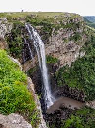

Writing sites are online platforms that provide resources, tools, and communities to help writers improve their craft, find inspiration, and connect with others. They often include writing tips, prompts, workshops, publishing advice, and opportunities for feedback or submission. Popular writing sites like Writer’s Digest, The Write Practice, and Electric Literature offer articles, tutorials, and forums tailored to both aspiring and experienced writers, covering genres from fiction to nonfiction and poetry. These sites support writers at every stage of their journey, from developing skills to navigating the publishing industry
